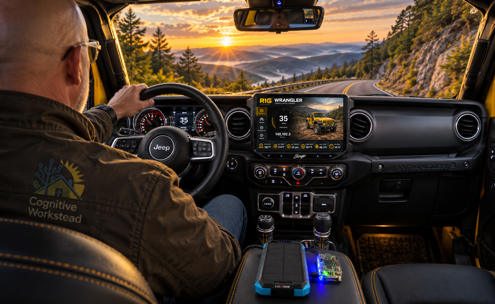
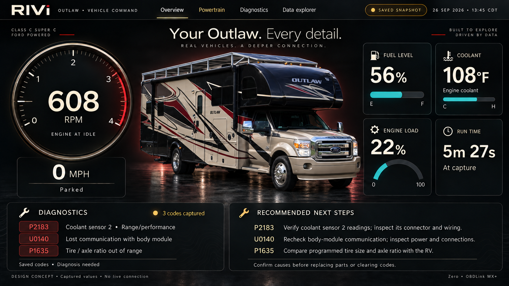
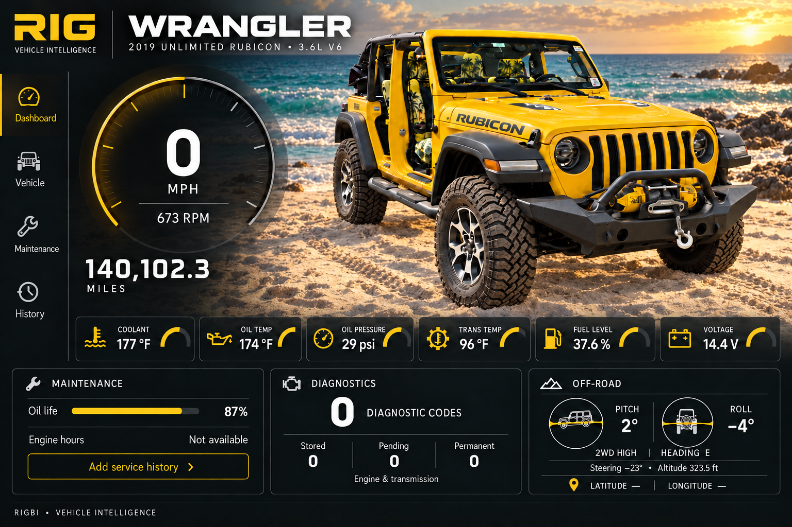
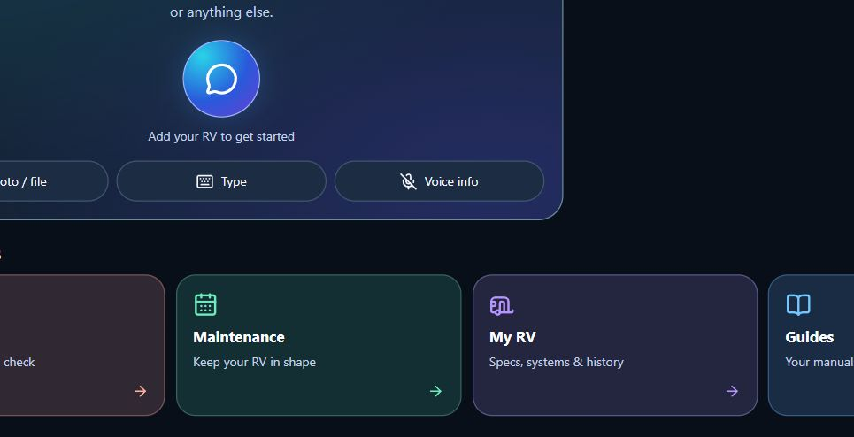
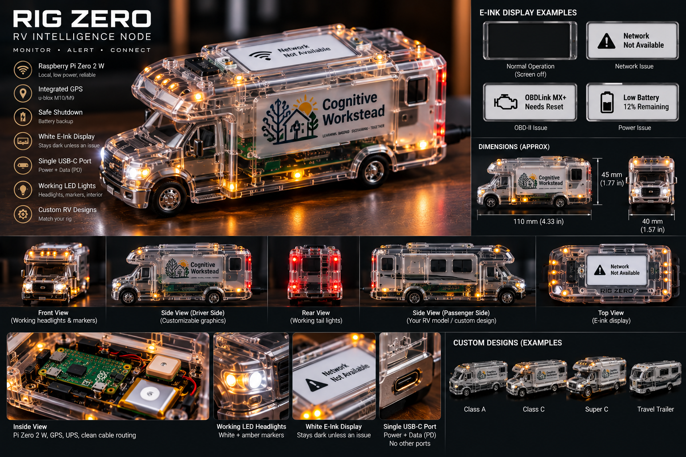
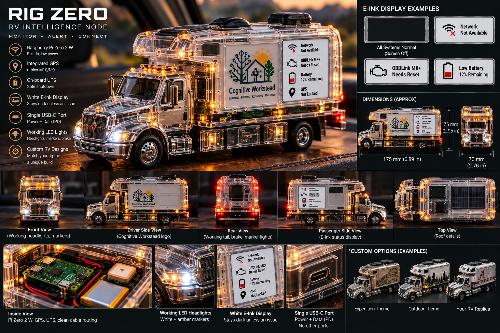

Know the vehicle.
Keep the year, make, model, VIN, and your own notes with the RV they belong to. Bring manuals and files into the same workspace.
Available in the appRV INTELLIGENCE GUIDE
Your RV has a history. Your next decision needs it.
Meet COL-B “Colby”, the AI assistant inside RIG. Colby helps you organize your RV’s records, work through symptoms, and prepare useful next checks—with you making the decisions.
Seeking about 10 Founding Testers. Real ownership. Useful feedback.

01 / THE RIG GARAGE
The RV. The vehicle that tows it. The toad that goes exploring. The trailer that carries the rest.
That’s the Garage we’re working toward. Today, RIG starts with RV profiles and the records behind them. Founding Testers will help shape the broader vehicle experience.


Concept artwork illustrates the direction. Gauges, live telemetry, and these dashboard layouts are not advertised as current app features.
02 / INSIDE RIG TODAY
Start with what you know. Keep the record. Work toward a better-informed next step.
The current RV workspace is live and under active testing and refinement.
Keep the year, make, model, VIN, and your own notes with the RV they belong to. Bring manuals and files into the same workspace.
Available in the appRecord maintenance tasks, repair history, and upgrade plans. Mark completed maintenance and keep the context for the next job.
Available in the appTalk through symptoms with COL-B “Colby”. Keep conversations and issue records, then prepare a Repair Shop Packet for a clearer handoff.
Available · actively being testedA LOOK AT THE ACTUAL APP
RIG’s current interface starts with your RV and the help you need. The capture shows the real assistant panel before a first RV is added.
Open the RIG application ↗
COL-B “Colby” helps organize information and suggest checks. You stay in control. AI guidance can be wrong and does not replace a qualified technician or the vehicle’s service instructions.
03 / WHY RIG EXISTS
A manual in one place. A repair note somewhere else. A symptom you’ve seen before—but can’t quite reconstruct.
RIG is Cognitive Workstead’s RV Intelligence Guide. We’re building it to keep a vehicle’s details and history together so they can help with the next decision. Informed by founder Greg Cothran’s experience as an RV owner, RIG brings our focus on useful AI and human judgment to the things owners maintain, troubleshoot, and depend on.
Explore Cognitive Workstead ↗04 / LOOKING AHEAD
RIG Zero imagines a companion that connects vehicle information to the owner’s workspace. These are design explorations, not an available hardware offer.
Connectivity, sensors, alerts, enclosure designs, and the specifications in the artwork are proposals. Compatibility, availability, and delivery dates are not established.


Cognitive Workstead concept artwork. Hardware specifications shown are illustrative.
05 / FOUNDING TESTERS
We’re inviting about 10 owners to help shape RIG. Bring the questions, maintenance habits, and frustrations that come with owning your setup.
You don’t need to be an AI expert. You do need to be willing to try things, tell us what’s confusing, and help us understand what would be useful.
Opens your email app. No payment or enrollment is submitted here. We’ll discuss fit, access, and expectations with you directly.
greg.cothran@cognitiveworkstead.com
The RIG application is live at rig.cognitiveworkstead.com. Access and membership are handled there. Contact Cognitive Workstead about joining the Founding Tester group.
The large vehicle dashboards and RIG Zero designs are concept artwork. The current app capture above shows the deployed interface. Broader Garage support and connected hardware are directions to explore, not promised release features.
Start with a short email about your setup and the problems you want help with. We’ll discuss participation and access with you directly. This invitation does not promise free lifetime service, hardware, or a particular release date.
No. RIG helps preserve context and prepare useful questions and records. Service decisions, safety checks, and repairs still need appropriate human judgment and qualified help.